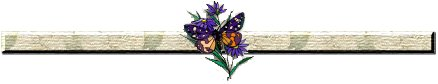

|
PHOTOS DES
LIEUX PAR FRANCINE
Francine a pris sa caméra et
est allée photographier la rue Létourneux, et sa ruelle, à l'été 2001. Pour voir ces photos, et les commentaires,
suivez
la guide...
En 2006, Francine a pointé sa
caméra vers le 580 Bourbonnière, résidence des Côté lors du mariage
de Charles et Ézilda, et vers le 2055 Sainte-Catherine, autre logement
habité par le jeune couple. Pour voir ces photos, et les
commentaires, suivez la guide...
En octobre 2009,
Francine et moi avons parcouru différentes rues de Québec pour
retracer des lieux ayant trait aux Consigny et aux Thibaudeau. Suite à
l'essor du quartier Saint-Roch, il ne reste plus rien des maisons
habitées par nos ancêtres il y a 100 ans. Elles ont été remplacées
soit par l'E.N.A.P, des édifices à logement ou des commerces. Nous
avons quand même pris ces photos, sans compter celles prises au
cimetière Saint-Charles. suivez
les guides...
 |
 CHEZ
LES CONSIGNY
CHEZ
LES CONSIGNY